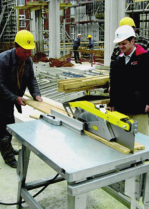

Nichtstationäre Maschinen sind Bearbeitungsmaschinen, die auf Baustellen
eingesetzt werden und die nicht handgeführt sind.
In der Bauwirtschaft werden folgende nichtstationäre Maschinen eingesetzt:
Für den Betrieb sind einige allgemeine Hinweise
zu beachten.